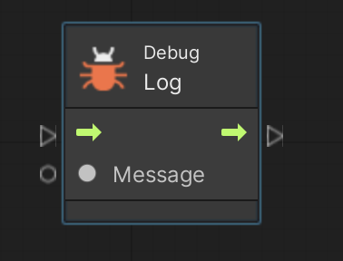
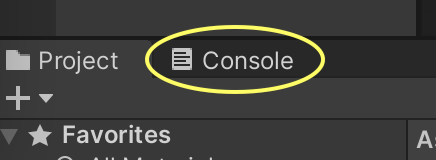
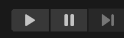
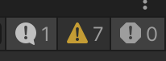

では Visual Scripting で Hello World を実行しましょう。
演習を行う前に準備をしましょう。
(2) で作成したゲームオブジェクトは「空(Empty)オフジェクト」と呼ばれるものです。
デフォルトでは何もしないし画面表示すらしませんが、マネージャとして使ったり、親子関係の親として使ったりなど、色々な用途で良く使われるゲームオブジェクトです。
まず以下の手順でスクリプト( Script Graph ファイル)を作成して下さい。
アセットフォルダの空いている部分を右クリックしてメニューを表示し、Create → Folder でフォルダを新規作成し、「Scripts」という名前に変更する
Scripts フォルダの中に入り、空いている部分を右クリックしてメニューを表示し、Create → Visual Scripting → Script Graph を選ぶ
Scripts フォルダ内に「New Script Graph」というアセットが出来るので「Hello Script」に名前を変更する
Hello Script をダブルクリックして Script Graph ウィンドウを表示する(図1)
※ 途中で「Your Unity preferences are set to reload scripts during play mode 〜」という警告が出る場合があります
※ この警告が出たらとりあえず Change now ボタンを押して下さい
※ 後で元の設定に戻したい時は Preferences → General → Script Changes While Playing を変更します
※ この設定について詳しくはネットで検索してください
さて図 1 の Script Graph ウィンドウにおいて
画面左上のパネルのことを「グラフインスペクタ(Graph Inspector)」
画面左下のパネルのことを「ブラックボード(Blackboard)」
右側のエリアの事を「グラフウィンドウ(Graph Window)」
と言います。
それぞれの使い方については適宜説明します。
では実際のプログラミングを始めます。
まず以下の手順に従って操作して下さい。
グラフウィンドウの適当なところで右クリックしてユニット選択ダイアログを表示する(もしメニューが表示されたら Add Unit を選択)
検索窓に「debug log」と入力する
検索結果の中から Debug Log (Message) を選択する
図2の様な図形が表示される
図2 Debug Log ユニット

図 2 の様な図形のことを「ユニット (Unit)」と呼びます。
ユニットは命令を実行したり、イベントの起点になったり、データ出力したりするための基本構成物で「ノード」と呼ばれることもあります。
例えば図 2 のユニットはデバッグ用ログを表示するユニットです。
ところでユニットの左右に三角マークが付いていて内側に矢印が描いてあるのが見えると思います。
この左の三角マークを「コントロール(Control)入力ポート」、右の三角マークを「コントロール(Control)出力ポート」と呼びます。
さらに三角マークの下に○マークがあります。
なお図 2 にはありませんが右側に○マークがあるユニットもあります。
左の○マークのことを「値(Value)入力ポート」、右の○マークのことを「値(Value)出力ポート」と呼びます。
さてユニット間の入出力ポートは矢印や線で繋ぐことが出来ます。
矢印や線でユニット間を繋ぐことで命令を実行したり、データを入出力したり出来るようになります。
では以下の手順で Debug Log ユニットに「Hello World」という文字列(String)を入力してみましょう。
Debug Log ユニットの値入力ポート(左の○マーク)からドラッグして適当な場所で指を離すとユニット選択ダイアログが表示される
検索窓に「String Literal」と入力する ※ 文字列(String)を出力するユニット
検索結果の中から String Literal を選択すると String Literal ユニットが表示され、その値出力ポートと Debug Log ユニットの値入力ポートが線で繋がる
String Literal ユニットの中にある空欄の中に Hello World と入力する
ただしこれだけだと Unity はプログラムをどこから開始すれば良いのか分からないので、プログラムの開始起点を作成します。
Debug Log ユニットのコントロール入力ポート(左の三角マーク)からドラッグして適当な場所で指を離すとユニット選択ダイアログが表示される
検索窓に「Start」と入力する ※ 開始(Start)イベントを表すユニット
検索結果の中から Start (in Events/Lifecycle) を選択すると Start イベントユニットが表示され、そのコントロール出力ポートと Debug Log ユニットのコントロール入力ポートが矢印で繋がる
ここまで来るとグラフウィンドウの表示は図3の様になっているはずです。
この図より、今回作成したスクリプトは
「プログラムが開始したら Start → Debug Log の順にユニットが実行されて Hello World という文字列を表示する」
という動作になっていることが視覚的に分かります。

これで Hello World のスクリプトは完成ですが、このスクリプトを実行するには Script Machine コンポーネントをゲームオブジェクトにアタッチする必要があります。
今回は空オブジェクトの PROGRAM に以下の手順で Script Machine をアタッチしてみましょう。
ヒエラルキーの PROGRAM をクリックしてインスペクタを表示する
インスペクタの下の方に Add Component というボタンがあるのでそれを押す
Visual Scripting → Script Machine を選択する。すると Script Machine がアタッチされる
Script Machine の Graph の None と書いてあるセルに Scripts フォルダの Hello Script をドロップする
None の表示が Hello Script に変わっているのを確認する(図4)
後は以下の手順でスクリプトを実行するだけです。
プロジェクト(Project)タブの右隣にあるコンソール(Console)タブをクリックする (図5)
図5. コンソール(Console)タブ(黄色の円で囲んでいるタブ)

するとコンソールが表示されて、ここに Debug Log ユニットに入力されたデータが表示される
Unity エディタの上の方にある実行ボタン(図6)を押す
図6. 実行ボタン (一番左の三角ボタン)を押すと実行、もう一度押すと停止する
コンソールに Hello World と表示されるのを確認する。いろいろ警告が出ている場合はコンソールの右上にある警告ボタン(図7)をクリックすると警告が消える
図7. 警告ボタン (真ん中の三角ボタン)を押すと警告の表示と非表示を切り替える
もう一度実行ボタンを押して実行を止める
ところで、たいしたプログラムでないのに実行ボタンを押してからプログラムが開始するまでやたら遅い時があります。
これは Unity エディタが実行開始時に初期化処理を行なっているためです。
この学習項目では特に初期化処理は必要ないので、こちらにある「実行ボタンを押してから実行開始するまでの時間を短くしたい」に書いてある設定を試してみると良いと思います。